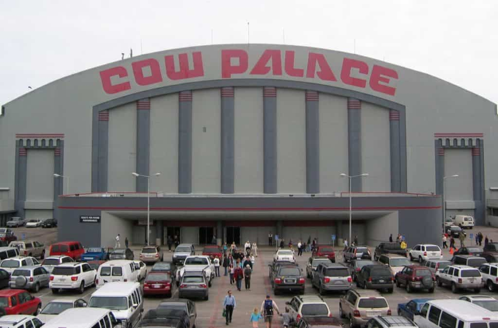
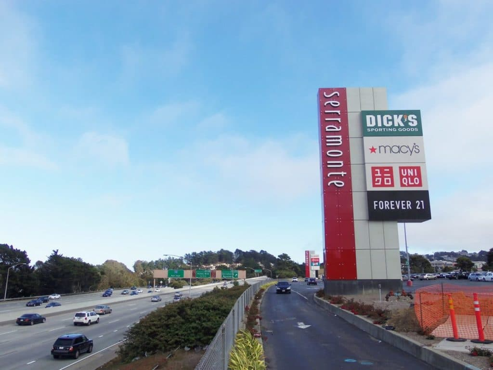
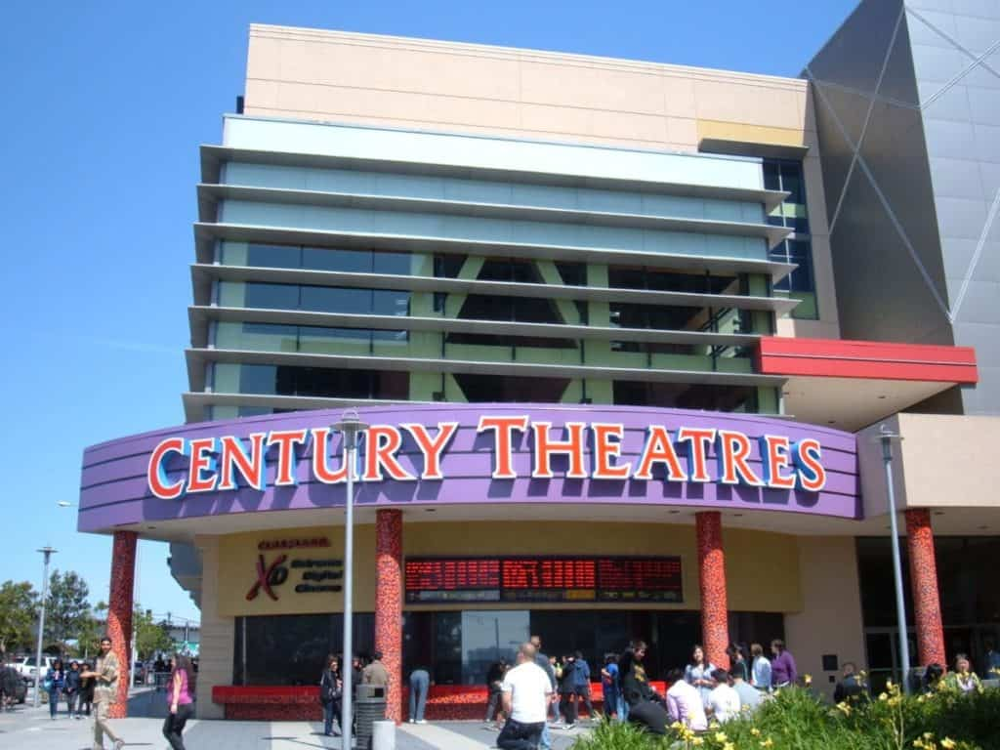

Cow Palace
One of Daly City’s best loved venues, the Cow Palace is an arena that sits right on the border of the city.
Easy to access from neighboring San Francisco, the Cow Palace hosts a range of concerts, shows, and live events throughout the year, so make sure to check the local listings to see what will be on when you are in town.
There are also a range of restaurants at the Cow Palace so that you can enjoy a meal and drinks as part of a show.

Serramonte
If you are looking for shopping and dining opportunities all under one roof then Serramonte Mall is the place to come.
With a huge range of shops to choose from, whatever you are looking for you will likely find it here, from high end brands to local boutiques.
If you get hungry then there are a plethora of dining options available as well.
For these reasons, this is one of the best loved malls in Daly City and comes recommended by locals if you are looking to shop till you drop when you visit.

Century 21
As the name suggests, the Century 20 Movie Theater in Daly City has an impressive twenty screens and is also located in a neighborhood that is known for its eclectic dining options.
The theater is known for its comfortable seating and huge choice of films including all the latest releases, and you can enjoy diverse dining including cafes and ice cream parlors if you want to grab a treat before or after a show.
